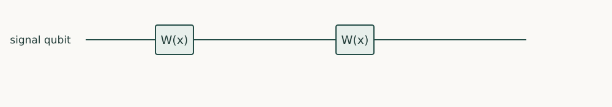

Quantum Algorithms · Chapter 8 · Draft lesson
Polynomial Transformations
How can a short circuit transform an entire spectrum without reading its eigenvalues?
Chapter direction
Starting point: Chapters 5–7; polynomial approximation introduced through the required filter.
Anchor example: Constructing a low-degree filter on an encoded two-level operator.
This lesson includes explanations, worked examples, and problems with solutions. Advanced results whose proofs are outside the chapter are identified explicitly.
8.1 Signal Processing
An encoded operator may have one spectral component we want to keep and another we want to suppress. Measuring every component first would be costly and destructive. Instead, build a circuit whose response is a polynomial in the unknown component value.
8.1.1 Phase sequences and polynomial response
Begin with a scalar signal x between −1 and 1 and a one-qubit unitary
\[W(x)=\begin{pmatrix}x&i\sqrt{1-x^2}\\i\sqrt{1-x^2}&x\end{pmatrix}.\]
Write x=cos θ, so W=exp(iθX). Repeating W twice makes its upper-left entry \(2x^2-1\); three repetitions give \(4x^3-3x\). These are the first Chebyshev responses \(T_d(x)=\cos(d\arccos x)\). Inserting adjustable phases \(e^{i\phi Z}\) between signal calls changes the response while keeping the whole circuit unitary. A degree-d construction uses d signal calls, plus phase operations.
8.1.2 Parity and boundedness constraints
A selected matrix entry of a unitary must have magnitude at most one. Repeated signal calls also constrain degree and parity: the zero-phase response has parity matching d. These are necessary checks on a proposed target polynomial. They are not a complete synthesis proof for every complex response: the complementary entry must complete a unitary, with convention-dependent constraints. General signal-processing synthesis is a theorem used with its admissibility conditions. Our worked construction W² proves the degree-two case directly and fixes the phase convention.
Problem 8.1. Evaluate the response of W² at x=0, 1/2, and 1.
Worked solution
The values are −1, −1/2, and 1. Magnitude never exceeds one. The response is not x²: unwanted auxiliary amplitudes can return on the second call.

8.2 Spectral Transformations
8.2.1 Qubitization and encoded eigenphases
An eigenvector of a Hermitian matrix H satisfies \(H\ket{v_j}=\lambda_j\ket{v_j}\); in that direction its action is multiplication by the real number λj. Qubitization turns suitable block access to H/α into two-dimensional invariant spaces whose walk eigenphases encode \(\arccos(\lambda_j/\alpha)\). Polynomial responses can then act on all these components coherently. Constructing the walk requires reflections about the auxiliary preparation and the relevant encoding accesses. It is not enough to have a classical list of eigenvalues.
8.2.2 Singular value transformation
For a general matrix, orthonormal input directions \(\ket{v_j}\) and output directions \(\ket{u_j}\) obey \(A\ket{v_j}=\sigma_j\ket{u_j}\), with nonnegative stretch factors σj. These are singular values. A singular-value transformation replaces selected stretch factors by a polynomial response; parity controls whether the map connects the input and output spaces or stays within one. An eigenvalue transformation on a Hermitian matrix and a singular-value transformation on an arbitrary matrix are related but not interchangeable statements. The general theorem is cited below; the scalar construction supplies its local intuition.
Problem 8.2. Why is the polynomial 2x not a valid unit-amplitude response on the entire interval [−1,1]?
Worked solution
At x=1 it has magnitude two. Scaling it to x or restricting and redesigning the signal domain is necessary; a unitary entry cannot exceed one.
8.3 Algorithm Construction
8.3.1 Filtering and matrix inversion
A filter should be close to one on a desired interval and close to zero on an unwanted interval. A gap between those intervals gives room for a bounded polynomial to change smoothly; a sharper gap or smaller error generally needs higher degree. Inversion asks for \(1/x\), which is unbounded near zero. If singular values lie in \([1/\kappa,1]\), instead approximate a scaled inverse \(c/x\) with \(c\leq1/\kappa\), leaving a bounded response. Applying it to a prepared vector yields a state proportional to the solution, subject to selection and amplification costs. It does not print all solution entries.
8.3.2 Hamiltonian simulation and precision costs
Simulation asks for the bounded response \(e^{-it\lambda}\). Polynomial approximations can implement its real and imaginary parts with suitable auxiliary combinations. The required degree depends on scaled time αt and desired error, while gates also depend on the cost of one block encoding and phase precision. A low-degree demonstration is not a proof of the best asymptotic bounds. The next chapter compares this spectral approach with building a desired evolution from short evolutions that are already available.
Problem 8.3. What prevents an inverse filter from treating a zero singular value like every other value?
Worked solution
Division by zero has no bounded response and an input component in the kernel contains no recoverable inverse information. One must specify a nonzero spectral range, a cutoff or pseudoinverse, and the resulting approximation.
We now have two ways to describe evolution: its response on spectral values and the product of available small operations. Evolution engineering makes the latter construction quantitative.
Sources and further study: Low and Chuang, Hamiltonian Simulation by Qubitization; Gilyén et al., Quantum singular value transformation.